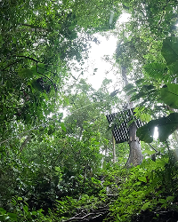
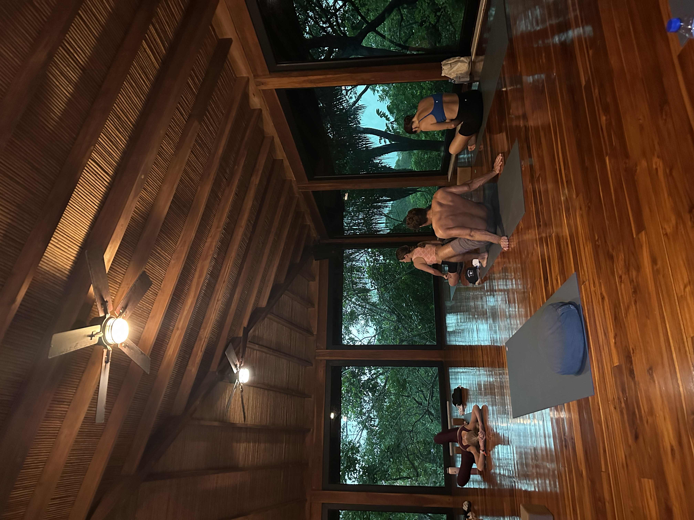
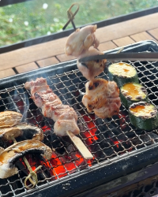

About
I started out in visual design, but over time became more curious about how the things I designed actually worked for people.
I spent three years at JENNY BIRD, working across e-commerce, mobile shopping, and email retention. It gave me the opportunity to collaborate with different teams, see my designs come to life, and understand how design connects to real business goals.
Wanting to go deeper into how design works is what brought me to Switzerland, where I'm now pursuing a Master's in Interaction Design at SUPSI.
Lately, I've been exploring more of the research, interaction, and technical side of design — from prototyping new ideas to learning how to build them myself.
I'm open to product design internships and early-career opportunities from July 2027, in Switzerland or elsewhere in Europe.
Experience
Most recently at
JENNY BIRD
Graphic & UX/UI Designer · Toronto · 2023–2026
Earlier: creative internships at HOLR Magazine, StyleCircle and Uncle Studios, plus a Social Media Coordinator role at Navigate Group · 2020–2023
Education
SUPSI
MA Interaction Design · Switzerland · 2026–present
Toronto Metropolitan University
BDes Fashion Communication · Toronto · 2019–2023
BrainStation
UI Design Certificate · 2024
Recognition
ArtTech Hack 2026 — Winner, fal.ai sponsor prize
Student Project House, ETH Zurich
Outside work
I’m a foodie, I love to travel, and yoga keeps me grounded.
I speak English and Korean, and I’m learning German and Italian — mostly by ordering food.



Get in touch
Have a role or project in mind?
I’d like to hear about it.